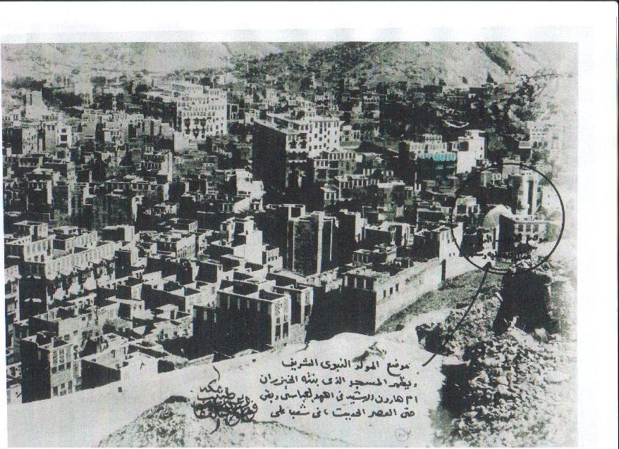

The Prophet Muhammad is considered by Muslims to be the last and greatest prophet of Islam. He was the founder and teacher of the Islamic religion, one of the most widely-practiced religions in the world. Throughout his entire lifetime, Muhammad received many revelations from Allah (God), he fought many battles, and before his death, he gave a final sermon which laid down the foundation and rules of Islam.
Muhammad was born in 570 C.E. in the city of Mecca (in modern-day Saudi Arabia). He was born into Quraysh tribe, and Muslims consider Mecca the holiest city. Muslims face Mecca whenever they pray, and only Muslims are allowed to enter the city. It was a tribal city, and there was a shrine called the Kaaba in the center of Islam’s most important mosque (the Great Mosque of Mecca). The Quraysh tribe, who ruled Mecca at the time, had built the Kaaba as a center of polytheistic worship (worshiping multiple gods).
Muhammad’s father had already passed away when he was born. Muhammad's mother sent him to live with a nomad in the desert when he was young. He learned to be respectful and kind to his elders, and he also learned about Arab traditions, rules, and culture. When Muhammad returned to his mother he was about five or six years old, but she soon passed away, leaving him an orphan. He was left in the care of his grandfather, and later, his uncle, Abu Talib. When he was twelve, he accompanied Abu Talib on a trading journey. Together they traveled as far as North Syria, this experience exposed Muhammad to the places outside the Arabian deserts at a very young age. When Muhammad grew to be a young man, he took on more responsibilities. He was known for his honesty, and he received a nickname: “Al-Aamin,” meaning trustworthy.
When Muhammad was 25 years old, an older woman named Khadija proposed to him because she was impressed by his responsibility and his trust. He accepted, and after they got married, they had several children, but only their daughter Fatimah had children that continued their bloodline. Muhammad spent time praying in the mountains around Mecca, and he would often spend multiple days in the mountains.
In the year 610 C.E., Muhammad received his first revelation. He had been praying in the mountains when he was visited by the angel Gabriel. Gabriel told Muhammad: “Recite in the name of thy Lord! Who created man from blood coagulated. Recite! Thy Lord is wondrous kind, who by the pen has taught mankind things they knew not.” Muhammad was terrified, but Gabriel said to him: “You are the messenger of God.” At first, Muhammad was afraid that he might be going mad, but his wife, Khadijah, believed in his revelation. Because of this, many consider Khadijah the first Muslim.
Over the following 22 years, Muhammad received more revelations and he turned to his family and friends for confidence. Gradually, a group of Muhammad’s followers formed in Mecca, and these followers were called “Muslims,” or “those who surrender to God.” This is significant because Islam is based on Monotheism, or the belief in only one God. Some of his followers recorded the things he said about his revelations, and these writings made up the Qur’an, which is the holy book of Islam.
Muhammad started preaching the Islamic religion to other Meccans at around 613 C.E. He taught people the belief that there is only one true God (Allah,) and he taught that the wealthy should share with the less fortunate. Also, since he was an orphan himself, Muhammad supported better treatment of orphans and women. Few people joined his small band of followers, but most other Meccans disagreed with Muhammad and they rejected his teachings. They saw Muhammad as a dangerous threat; they were unwilling to share their wealth, as Muhammad had taught them to do, and they also believed that if he seized political power, people would stop practicing their polytheistic religion. As a result, some Meccans accused Muhammad of being a liar and they tortured his weaker followers, but they continued to endure this and they would not give up their faith.
The number of people in Muhammad’s group of followers grew, and the response of the powerful Meccan clans was boycott. It was an attempt to make Muhammad’s followers give up Islam. As a result, the Hashim clan (one of the clans of the Quraysh tribe) suffered for three years since Meccans did not want to do business with them.
In 619 C.E., Abu Talib and Khadijah died. Muhammad was devastated, but something miraculous happened during that same year. Muhammad had fell asleep while praying by the Kaaba, and he had a dream in which he mounted a winged creature and it took him to Jerusalem. (Early Muslims prayed towards Jerusalem, and later, they prayed towards Mecca.) There, he met the prophets who have preceded him, such as Abraham, Moses, and Jesus. The creature then took Muhammad up all the seven levels of heaven and there, he met God. Jerusalem is still considered a holy city to Muslims today.
In 622 C.E., Muhammad moved to a town called Yathrib as a broker of peace between feuding tribes. In return, they promised him protection. The journey from Mecca to Yathrib is known as the hijrah, and the year of the hijrah became the first year in the Muslim calendar. Muhammad renamed the town from Yathrib to Medina, meaning “City of the Prophet.” Arabs in Medina converted to Islam, and Muhammad’s group of followers grew. Islam emphasized loyalty, the brotherhood of faith, and respect for others. He asked that his followers respect Christians and Jews who also believed in one single God.
After Muhammad and his followers left Mecca, they still felt threatened. In 624 C.E., fighting broke out between the Muslims and the Meccans once again. The Muslims successfully ambushed the Meccan caravan which was on its way to Mecca. A few years after that, the Meccans had attempted a siege of Medina, but they failed. Muhammad was growing more and more powerful.
As Islam spread throughout Arabia, the Meccans made a truce with the Muslims, and in 628 C.E., they allowed Muhammad to make a pilgrimage to their city the following year of 629 C.E. In 630 C.E., however, they broke the truce. In response, Muhammad led his army into the city, and the leaders of Mecca surrendered. He then forgave all his former enemies instead of turning to violence. The Muslims destroyed the idols of the other gods in the Kaaba, and they rededicated the shrine to their one God, Allah.. The war between the Meccans and Muslims had finally ended. Muhammad led his final pilgrimage in the March of 632 C.E. and he delivered a Final Sermon which laid down the foundation for Islam. Shortly after his return to Medina, he passed away on June 8, 632 C.E. Muhammad would go down in history as one of the greatest leaders, prophets, and the founder of Islam, one of the greatest religions in the world.
Now that we've learned about the person who founded Islam, let's learn more about the teachings of Islam and how they are different or similar to the teachings of other major religions. NEXT -->